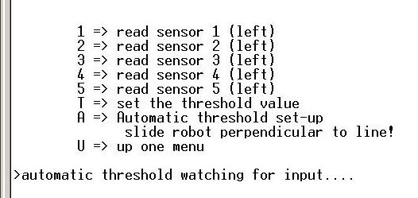
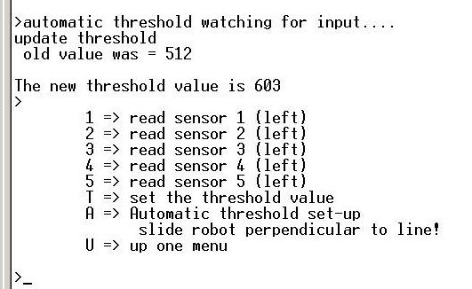

April 26, 2010
When A or a is chosen a message pops up that the robot is waiting for imput from the sensors. At this point the robot is slid across the line by hand with the motors disabled (sensor board perpendicular to the line).
The program will pick a threshold value that ensures that the line will not be lost between sensors.
- The robot should be on All white when the A menu item is selected.
- The line should be to the right of the robot before the robot is slid across the line.
- The robot must not be lifted as it is slid across the line.
- The first sensor to be activated should be the right sensor and the last sensor to be activated should be the left sensor.

back up to sensor menu This feature was added because even with the course calibration of sensors used at the Richmond campus a few of the robots required a threshold value less than the default to ensure that the line could not be lost between the IR reflective sensors when used on a track with a clear plastic cover.